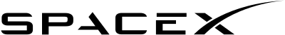
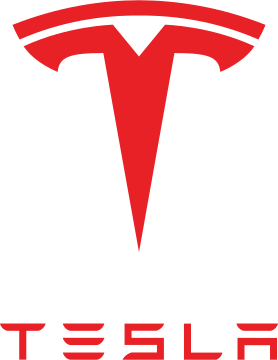

Elon Musk
Technology Innovator

List of Elon Musk Companies
- 
- 2002 - SpaceX was founded by Elon Musk with a goal of reducing space transportation costs to enable the colonization of Mars.
- 
- 2004 - Elon Musk became the largest shareholder of Tesla with a $6.5 million investment. He has been the CEO since 2008 and states the purpose of Tesla is to help expediate the move to sustainable transport and energy.

- 2015 - OpenAI is an artificial intelligence research laboratory with the goal of developing friendly AI. Elon Musk founded the company in 2015 and resigned in 2018.

- 2016 - Neuralink develops implantable brain-machine interfaces and was co-founded by Elon Musk in 2016.

- 2018 - Also founded by Elon Musk, The Boring Company is a tunnel construction company developing intra-city loop transit systems. Previously a subsidary of SpaceX, The Boring Company became independent in 2018.